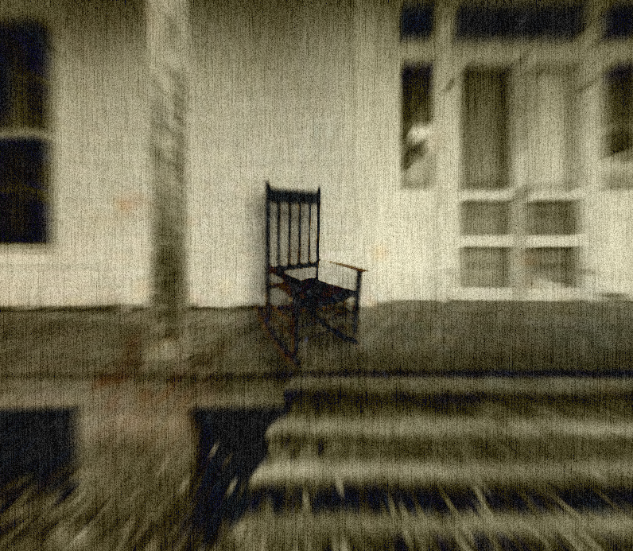

|  |
|---|
| RSE-005 immediately after discovery |
RSE-005 is a sentient rocking chair constructed from African Blackwood. It is believed to have been created by RSE-010 sometime in the year 1337. RSE-005 has the unusual ability to speak in any language despite having any clear location of mouth.
RSE-005 is also capable of communicating telepathically with humans, using this ability to lure in victims by transmitting their greatest desires and then attacking them. RSE-005’s method of killing involves absorbing subjects into itself once they have sat upon RSE-005.
Location 04 was constructed with the sole intent of holding RSE-005 as far as possible away from RSE-010 and other AOC specimen. RSE-005 is kept under permanent sedation in a cryogenically frozen steel containment cell in Sector 03 of Location 04.